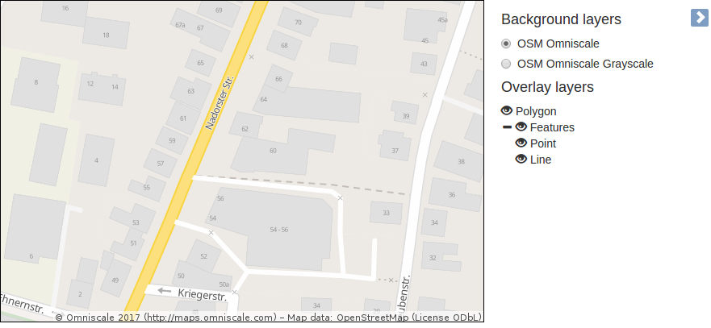
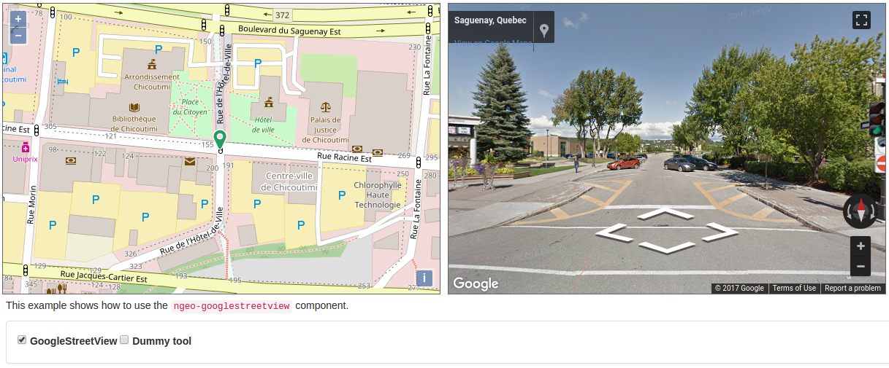

AnOl, GeoExt,
MapStore 2, ngeo, …
An overview of extensions,
plugins, libraries & frameworks
around OpenLayers
2017-08-16, FOSS4G, Boston, MA, USA
Outline
- Disclaimer
- About …
- Motivation
- Examples galore
- Conclusion
Disclaimer
Disclaimer
- Overview … but likely incomplete
- Comparison? Apples and oranges!
- I am partly involved in development of some projects
- I'll try to be unbiased
- Vanilla JS vs. JavaScript fatigue vs. reinventing the wheel
- Non-scientific definitions
About …
Marc Jansen

{kind=link}
- Technical lead @ terrestris
- Core developer OpenLayers
- Core developer / PSC member GeoExt
- Author "OpenLayers" (German)
- Speaker & workshop instructor
national & international - OSGeo Foundation Charter Member
terrestris
- terrestris.de
- Top-notch OpenSource GIS from Bonn, Germany
- Development, projects, support & teaching
- Consulting, implementation, planning & maintenance
…this talk
- extension, plugin, add-on
- Focused addition, new feature
- library
- multiple different additions, collection
- framework
- often built on top of 3rd party software, usually comes with a paradigm / structure / pattern
Sometimes the boundaries are blurred and there is a fluid transition
Motivation
Why?
- OpenLayers doesn't have everything
- What else is there on the market?
- There is a lot out there!
- Impact of decisions for own projects
Examples galore
Layerswitcher
Popups
Geocoding
Contextmenu
There is more, e.g.
- ol3-projection-switcher, by National Snow and Ice Data Center,
- GWT-OpenLayers, by Tino Desjardins
- Wrapper for Vaadin 8, (mostly) by Martin Stypinski
- Integration into Drupal and WordPress
- See also https://openlayers.org/3rd-party/
(PRs accepted to become part of this list)
ol-ext
ol-cesium
GeoExt
AnOl
ngeo
MapStore 2

More?
- Integrations with your framework of choice?
- Chances are good!
- e.g. Ember.js / Meteor
- Some not-quite-up-to-date
- Some are more proof of concepts / examples
Conclusion
Conclusion
- There is a lot!
- A lot quality-wise, too!
- Vanilla JS vs. JavaScript fatigue vs. reinventing the wheel
- Can OpenLayers make it easier to create plugins etc.?
- Thanks to everyone involved in building sth. with OpenLayers
Thank you
Questions & comments?
Imprint
Author
Marc Jansen
terrestris GmbH & Co. KG
Kölnstr. 99, 53111 Bonn
Germany
jansen@terrestris.de
terrestris GmbH & Co. KG
Kölnstr. 99, 53111 Bonn
Germany
jansen@terrestris.de
License
The slides of this talk are licensed under CC BY-SA 4.0.